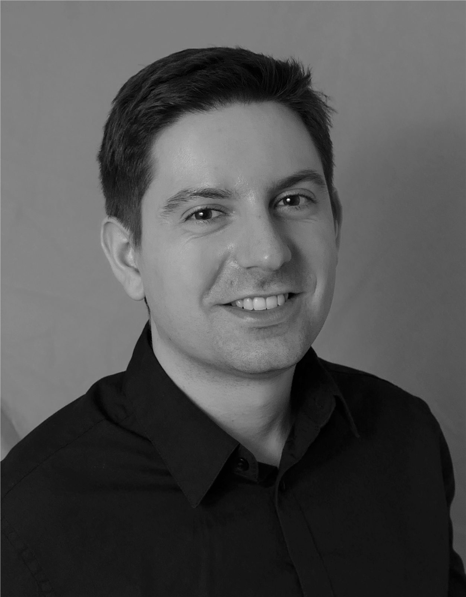

Process & manufacturing engineering
- Process optimization and troubleshooting
- Production planning and operations support
- Equipment reliability and lifecycle management
- GMP documentation, validation, and tech transfer
Work
Experience in process development, pilot operations, scale-up, manufacturing engineering, equipment, and process data systems across cell culture, fermentation, and biopharmaceutical production.

Focus areas
Experience
Vaxcyte · San Carlos, CA
GOOD Meat (Eat Just) · Alameda, CA
Codexis · Redwood City, CA
AstraZeneca · Redwood City, CA
Bayer · Berkeley, CA
Process equipment
Software & systems
Education
B.S. Bioengineering & Materials EngineeringUC Berkeley · 2013
Lean Six Sigma Green BeltIIE · 2015
Google Data Analytics Certificate2023